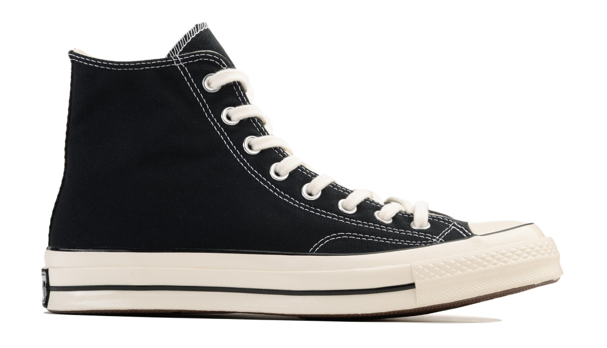

История компании Converse началась в 1908 году, когда Маркус Миллс Конверс основал в
Малдене, Массачусетс, обувную фабрику. Изначально компания специализировалась на выпуске
рабочей обуви, особенно для шахтеров и строителей. В 1917 году компания была переименована в
“Converse Rubber Shoe Company”, поскольку основной акцент был сделан на производство обуви
из резины.
В 1921 году Converse представила свою первую баскетбольную обувь, которая быстро стала
популярной среди игроков. Это привело к тому, что в 1936 году компания решила
сосредоточиться на производстве спортивной обуви. В последующие годы бренд стал
ассоциироваться с баскетболом и стал одним из самых узнаваемых в мире спорта.
В 1986 году Converse объединилась с компанией Nike, чтобы расширить свой рынок и улучшить
свои продукты. С тех пор, бренд Converse стал еще более известным благодаря сотрудничеству с
различными знаменитостями, спортсменами и модными дизайнерами. Сегодня Converse продолжает
выпускать разнообразную спортивную обувь и одежду, а также является одним из ключевых
игроков на рынке молодежной моды.

Converse Chuck 70 High
Nike Comme des Garcons PLAY Black
О кроссах
Дата выхода
10/03/2023
Розничная цена
251€
Материалы
Кожа 100%, резина